|
|
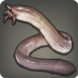 |
Oil Eel |
| 148 Aetherochemical Spills | |
| A slimy, finless creature that more closely resembles a worm than it does a fish. |
When assaulted by a predator, the oil eel will release copious amounts of a slick, mucous-like substance that prevents adequate purchase, allowing the wavekin to escape. Despite what the name suggests, the secreted substance does not actually contain any oil. |
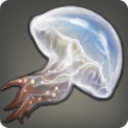 |
Jeweled Jellyfish |
| 148 Aetherochemical Spills | |
| A luminescent jellyfish capable of surviving within the pools of aetherochemical residue collecting on Azys Lla. |
Strictly a nocturnal hunter, this luminescent jellyfish uses the colorful light emitted by its body to lure insects and small fish into its inescapable web of poisonous tentacles. |
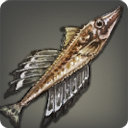 |
Battle Galley |
| 148 Rivers | |
| A freshwater fish native to all of Coerthas, but now primarily found in Ashpool. |
With fins like billowing sails and a mouth like an armored ramming prow, this large freshwater fish not only has the appearance of a Lominsan battle galley, but also the strength─repeatedly butting larger prey until stunned and susceptible to attack. |
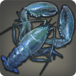 |
Yalm Lobster |
| 148 Lakes |  |
| A giant freshwater crustacean that primarily dwells beneath the boulders of the Quickspill Delta. |
From claw to tail, the length of this freshwater crustacean often exceeds a full yalm when fully grown. While not as succulent as the meat from smaller lobsters, a single tail can feed a Lalafellin family of seven or a single Roegadyn adolescent. |
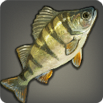 |
Hinterlands Perch |
| 150 Lakes | |
| A freshwater fish native to the Thaliak River. |
A ferociously territorial fish, the hinterlands perch currently finds itself in a heated battle with several goblin-introduced foreign species over dominion of the waters of lower Dravania. |
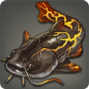 |
Oven Catfish |
| 148 Magma | |
| A magma-dwelling fish found in the mountain flows of Mourn. |
An ancient tome on culinary legend kept on display at the Bismarck tells the story of a man who climbed the highest peak in Abalathia's Spine to catch the mythical catfish which swim the red-hot blood of Hydaelyn Herself. Upon drawing the fish from the lake of lava, he found the fish was already cooked, and proceeded to devour it, for the journey into the heart of the mountain had left him famished. |
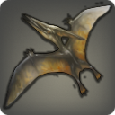 |
Pteranodon |
145 Floating Islands  | |
| This flying scalekin can be seen scouting the lower reaches of the Churning Mists for insects and small birds. |
If sketches in ancient bestiaries are to be believed, this scalekin has changed very little over the past several millennia, leading some to believe that it is of the same blood as the dragons. This has, however, been disproven, the flying lizards possessing about as much intelligence as the average ninki nanka. |
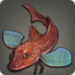 |
Winged Gurnard |
| 148 Floating Islands | |
| A flying fish found in the skies around the Blue Window. |
The wings of this flying fish are almost completely made up of concentrated aether─aether that dissipates once the fish has been caught, leaving naught but a skeletal frame. |
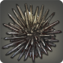 |
Spring Urchin |
180 Lakes  |  |
| A freshwater creature that prefers the warm waters released by the springs at Dragonspit. |
Though found solely in the hyperborean reaches of Eorzea, the spring urchin can only survive in the heated waters of geothermal springs. A good number of the shrill howls that fill the Coerthan nights are from yeti who mistakenly step on the urchins' spiked shells when wading through the natural baths. |
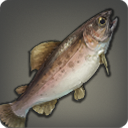 |
Cherry Trout |
| 148 Lakes | |
| Once found across Coerthas and Dravania, this reddish variety of trout now only survives in the heated waters of Dragonspit. |
Contrary to popular belief, the cherry trout is actually named after the pinkish-red hue of its underbelly. And so doth continue mankind's never-ending search for a cherry-flavored fish. |
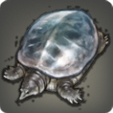 |
Stupendemys |
| 180 Floating Islands | |
| If a flying crystal-shelled tortoise cannot be seen as stupendous, nothing can. |
This rare tortoise's ability of flight is granted by its fabulous shell made up of solid wind crystal. As long as the shell remains undamaged, the cloudkin will remain aloft; however, the moment even the smallest of scratches are suffered, it will plummet back to Hydaelyn. |
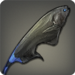 |
Black Magefish |
| 150 Magma | |
| The ability to wield powerful black magic is only this fish's second-most impressive characteristic, the ability to survive in scalding hot lava, the first. |
Similar to how the sorcerer fish is able to manipulate its body's fire-aspected aether, the black magefish is able to tap into the ice-aspected aether contained in its phlegmatic humours to perpetually cool its body, allowing it to survive in otherwise deadly molten lava. |
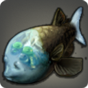 |
Barreleye |
| 180 Aetherochemical Spills | |
| An exotic fish found only in the aetherochemical reservoirs on central Azys Lla's research vessel. |
The braincase of this dome-headed fish is, unlike the rest of its body, completely transparent and filled with a gel-like substance in which the eyes float. The lack of any even remotely similar creatures in all of the Three Great Continents suggests that this creature may be another one of the Allagan Empire's terrible creations. |
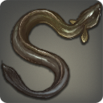 |
Thunderbolt Eel |
| 150 Rivers | |
| A narrow-bodied freshwater fish found in the pools flooding the Iron Feast, amongst other locations. |
While able to generate an electric charge with its body, this wavekin does not utilize that charge to subdue its prey, but rather locate it by detecting how the electric waves change after being released. Once the eel has determined where its prey is, it will wrap itself about the creature and strangle it. |
|
Catkiller |
| 150 Lakes | |
| A large freshwater fish found lurking in the floating Abalathian lake known as the Eddies. |
The catkiller is a freshwater pike which uses its long, whip-like dorsal fin to impale gaelicats who fly too close to the water's surface. Formerly called a “gaelicatkiller,” the amalgamation of three different words into one was deemed by naturalist circles far too difficult to read and subsequently shortened to its current (albeit equally unceremonious) moniker. |
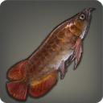 |
Loosetongue |
| 180 Lakes | |
| A giant freshwater cousin of the bonytongue found only in the Thaliak River. |
This colossal wavekin is, in fact, little more than a common bonytongue that has grown to an enormous size in the relatively safe waters of the Dravanian hinterlands. This phenomenon, however, has allowed scholars to form a correlation between the size of a bonytongue and the softness of its tongue. |
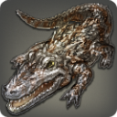 |
Thaliak Caiman |
| 150 Rivers | |
| A giant breed of caiman native to the Thaliak River. |
Whereas most of the known world shies away from the fetid odor emitted by Illuminati perch, the Thaliak caiman seems drawn to it, refusing to eat any other manner of flesh if a perch is detected in the vicinity. This eating habit has made the scalekin a target of Illuminati fishers, who will employ heavy crossbows in an attempt to protect the fish (that they eventually plan on catching and eating themselves). |
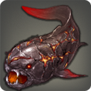 |
Lavalord |
| 180 Magma | |
| A legendary lava-dwelling fish covered in thick armor and rumored to be the guardian of the gate of the Fire Hell. |
Even with several live specimens having been caught and returned to Ul'dah for further study, many naturalists still deny the existence of magma-dwelling fish such as the lavalord, and dismiss the finding of their peers as lies concocted to gain fame. |
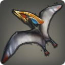 |
Tupuxuara |
| 150 Floating Islands | |
| An ancient wyvern still found living on the Habisphere, thousands of years after its creators perished in the calamity which destroyed their civilization. |
All existing samples of the tupuxuara─an ancient breed of wyvern─have been discovered in the Aetherochemical Research Facility on Azys Lla. If these were indeed created in the Allagan Empire's laboratories, it would make the creatures several thousand years old. |
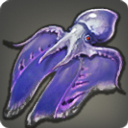 |
Vampiric Tapestry |
| 150 Floating Islands | |
| A flying cephalopod that rarely strays from the skies near Mok Oogl Island. |
Despite the fear-inducing moniker, this flying cephalopod neither sups on blood nor transforms into a bat. Rumors that it does not cast a shadow are unfounded, and all manner of stakes, from oak, to iron, to granite, to cermet, have been found effective in impaling this rather peaceful creature of the clouds. |
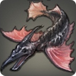 |
Storm Chaser |
| 180 Floating Islands | |
| A flying fish native to the skies of Tharl Oom Khash. |
Inside the storm chaser's belly lives a unique type of yeast which breaks down food to create a lighter-than-air gas which allows the fish to float. Short bursts of this gas from its rectum are used for propulsion. Yes, you read that correctly. |
|
Berserker Betta |
| 180 Rivers | |
| A small, yet hostile freshwater fish found in small numbers in the Thaliak River. |
Sharlayan scholars deemed the berserker betta to be one of the most violent breeds of the already infamously violent family of betta. Despite having little to no chance of subduing a target, berserker betta will repeatedly attack fish three to four times larger than itself. This natural-born stubbornness has ensured the berserker population remains relatively small. |
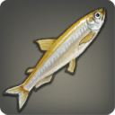 |
Capelin |
| 180 Lakes | |
| A tiny freshwater fish that dwells in Clearpool near Oakum Landing. |
During spawning season, a female capelin's belly will be so full of eggs that the fish will almost double in size, making the wavekin a favorite amongst egg-loving Qiqirn. |
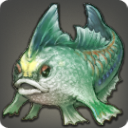 |
Functional Proto-hropken |
| 180 Aetherochemical Spills | |
| A remarkably developed manlike fish living in the aetherochemical pools of Azys Lla. |
Markedly more developed than the proto-hropken, the slightest hint of intelligence can be sensed when staring into this abomination's eyes. |
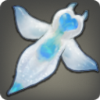 |
Coerthan Clione |
| 180 Lakes | |
| Though believed by scholars to be a distant cousin of the snail, this tiny transparent mollusk does not have a shell. |
Oft found thriving beneath the surface of the permanently frozen lakes of northern Coerthas, these shell-less mollusks wield a half-dozen scourge-like tentacles to throttle, asphyxiate, and then rend apart their prey. |
|